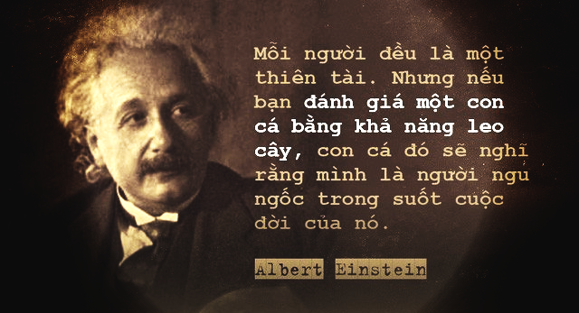

Khi rơi vào bế tắc, mất phương hướng, hãy ghi nhớ 7 câu nói truyền cảm hứng này
Nếu bạn đang ở trong hoàn cảnh khó khăn, thì hãy nhớ rằng bạn không hề đơn độc. Bạn có thể cảm thấy tuyệt vọng ở một phút giây nào đó, vì một lý do nào đó như thất bại trong kinh doanh, không kiếm được việc làm, mất đi một người thân hay bị phản bội. Nhưng niềm hi vọng luôn tồn tại ở quanh ta, nó dành cho tất cả mọi người kể cả bạn. Đó là lý do tại sao người ta có câu nói, "Mỗi đám mây đen đều có ánh hào quang lấp lánh phía sau” hay “trong cái rủi có cái may”.
Dưới đây là 7 câu nói truyền cảm hứng nhất, sẽ giúp bạn mạnh mẽ vượt qua những thời điểm bão giông trong cuộc đời.
1. “Chỉ có HAI ngày duy nhất trong năm mà bạn không thể làm gì được. Một cái có tên là ngày hôm qua, và cái còn lại được gọi là ngày mai. Hôm nay chính là ngày thích hợp nhất để tin, yêu, hành động và sống cuộc đời của riêng bạn” - Đức Đạt Lai Lạt Ma.
Câu nói này được Đức Đạt Lai Lạt Ma nói khi người thuyết giảng về sức hấp dẫn của sự sống. Bạn sống trong hiện tại, làm mọi thứ vì hiện tại, không phải cho quá khứ hay tương lai. Thử hỏi trên đời này, có ai có thể thay đổi được những gì đã xảy ra hay dự báo trước được tương lai chưa tới không? Câu trả lời là không. Bạn chỉ có thể quên đi những điều tồi tệ từ quá khứ và làm những điều tốt đẹp trong hiện tại để cải thiện tương lai.
2. “Mọi người đều là thiên tài. Nhưng nếu bạn đánh giá một con cá bằng khả năng leo lên cây, nó sẽ sống cả đời với niềm tin rằng nó ngu ngốc” - Albert Einstein.
Những lúc tuyệt vọng và muốn buông xuôi, đã bao giờ bạn nghĩ đến những lời động viên tuyệt vời này từ thiên tài vật lí Albert Einstein chưa? Ra đời từ cách đây hàng thập kỉ nhưng nó vẫn rất sâu sắc và thiết thực cho thời điểm hiện tại. Đôi khi chúng ta khổ sở vì bị mọi người đặt vào một nơi mà chúng ta không thuộc về, và vì thế chúng ta dần cảm thấy rằng bản thân mình vô dụng.
Tuy nhiên, đó không phải là tất cả. Bởi vì bất cứ ai sinh ra cũng được ban tặng một năng khiếu, một thế mạnh nào đó, mà đôi khi chúng ta dường như chưa nhận ra. Đừng để quan điểm của người khác phá hỏng cuộc đời của bạn. Hãy cứ vẫy vùng nơi biển nước nếu bạn là một chú cá chứ đừng chối bỏ bản thân mình.
3. “Mỗi khi bạn nêu ra điều bạn muốn hoặc tin tưởng, bạn là người đầu tiên nghe thấy nó. Đó là thông điệp cho cả bạn và những người khác về những gì bạn nghĩ là có thể. Không ai có thể làm bạn từ bỏ giấc mơ trừ khi bạn cho phép điều đó” - Oprah Winfrey.
Những lời động viên từ Oprah Winfrey đã cho tôi rất nhiều sức mạnh trong thời gian khó khăn nhất. Nhiều lần chúng ta từ bỏ ước mơ của mình chỉ vì chúng ta nghĩ rằng điều đó là không thể. Nỗi sợ thất bại chính là lực cản lớn nhất đẩu lùi những quyết tâm, nhiệt huyết tuổi trẻ. Hãy mạnh mẽ đứng lên và nói với bản thân rằng chúng ta có thể làm được. Bởi vì mọi thất bại chỉ là người thầy đưa lối cho ta đến với thành công.
4. “Ngay cả khi bạn đang suy nghĩ đúng hướng, bạn sẽ chẳng bao giờ thành công nếu bạn chỉ ngồi đó" - nhà báo, nhà bình luận xã hội Will Rogers.
Tiền nhân có câu “dòng nước đứng yên là dòng nước đục”. Chỉ khi dòng nước chảy đi nó mới trở nên hữu ích. Nếu bạn muốn thành công, bạn không có cách nào khác ngoài việc dấn thân về phía trước. Đừng để những khó khăn níu giữ bạn lại và cũng đừng chỉ ngồi yên chờ đợi một phép lạ xảy ra. Nếu bạn đang đi đúng hướng thì không có gì có thể ngăn bạn đi tiếp tục đi xa hơn nữa trong cuộc sống.
5. “Tôi sẽ không để cho bất cứ ai bước qua tâm trí của mình bằng dấu chân lấm bẩn của họ" - Mahatma Gandhi.
Tất cả mọi hoạt động của chúng ta, trong suốt cuộc đời này, đều được kiểm soát bởi tâm trí. Chính xác hơn là bạn sẽ trở thành kiểu người mà bạn nghĩ về mỗi đêm. Tin hay không tùy bạn, nhưng đó là sự thật.
Những người xung quanh chúng ta không phải lúc nào cũng giúp ta tiến bộ và hoàn thiện, và đôi khi mục đích của họ khi xuất hiện trong cuộc đời bạn chỉ là đem đến những phiền não. Tuy nhiên có tiếp nhận những phiền não đó hay không lại hoàn toàn phụ thuộc vào bạn. Khi bạn kiểm soát tốt suy nghĩ và tâm trí của mình, không có gì và không có ai có thể làm bạn phân tâm.
6. “Những điều tưởng chừng như cay đắng mà chúng ta đang trải qua thực chất chính là phước lành ẩn dưới lớp ngụy trang” - Nhà văn Oscar Wilde.

Có những thời điểm cuộc sống trở nên khó khăn đến nỗi bạn tin rằng không hề có thứ gọi là ánh sáng ở cuối đường hầm. Chúng ta quên mất rằng cuộc đấu tranh khốc liệt ngày hôm nay là vì một tương lai tốt đẹp hơn. Khó khăn không phải là thứ tồn tại vĩnh viễn. Một khi bạn đã quyết tâm thay đổi hoàn cảnh của mình thì ngay cả Thượng đế cũng sẽ giúp bạn. Chỉ cần bạn ghi nhớ câu nói này: "Chúa giúp những người biết tự giúp mình."
7. “Giữa những chuyển động hỗn loạn, hãy giữ lấy sự tĩnh lặng bên trong bạn” - Nhà văn về triết lý sống Deepak Chopra.

Đây là một trích dẫn sâu sắc và tinh tế, mà chúng ta có thể sử dụng nó để tóm tắt toàn bộ bài viết này. Nó có thể làm thay đổi cách bạn nhìn nhận vấn đề ngay lập tức. Có những trường hợp hoàn toàn nằm ngoài tầm kiểm soát, có những vấn đề bạn không thể giải quyết khiến cho bạn cảm thấy hoang mang và mất bình tĩnh. Tuy nhiên nếu bạn vẫn giữ được “tâm bất biến giữa dòng đời vạn biến” thì chắc chắn bạn sẽ là chiến thắng.
Thắng thua, được mất là một phần của cuộc sống và nó chỉ mang tính giai đoạn. Mọi giai đoạn rồi sẽ trôi qua, một ngày nào đó bạn sẽ biết ơn tất cả những sai lầm, thử thách bởi vì nó khiến bạn mạnh mẽ, trưởng thành và tốt đẹp hơn.
Nguồn: CafeF
Xem bài viết gốc